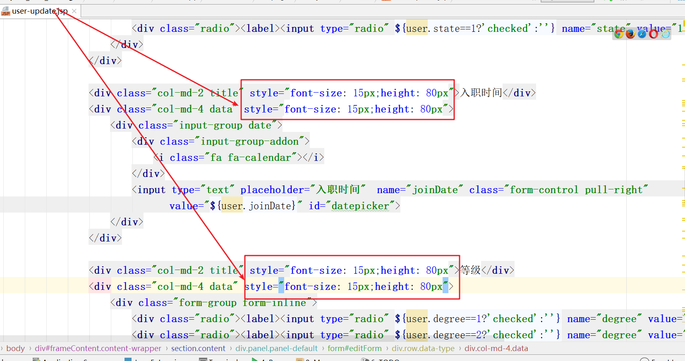
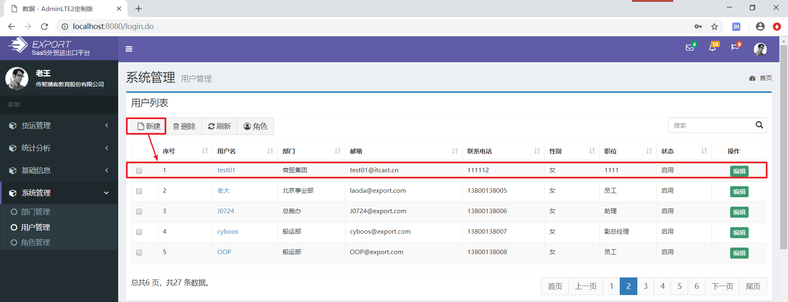

学习目标
实现用户登录与注销
实现动态菜单展示
实现用户登录日志处理
能够了解认证和授权概念
理解Shiro安全框架的作用
1. 用户登陆（一）登陆
需求
实现登陆功能：
步骤
- 查看login.jsp登陆提交地址
- 编写LoginController，实现登陆
- UserService添加根据邮箱查询方法
- UserDao接口、映射添加查询方法
- 测试
实现
查看login.jsp登陆提交地址
编写LoginController，实现登陆
实现login()方法：
package cn.itcast.web.controller; import cn.itcast.domain.system.User; import cn.itcast.service.system.UserService; import org.springframework.beans.factory.annotation.Autowired; import org.springframework.stereotype.Controller; import org.springframework.util.StringUtils; import org.springframework.web.bind.annotation.RequestMapping; @Controller public class LoginController extends BaseController { @Autowired private UserService userService; /* 作用： 用户登陆 url:/login.do 参数： email （邮箱），password(密码) 返回值： 登陆成功返回到 main（后台主页） , 登陆失败回到login.jsp页面 */ @RequestMapping("/login") public String login(String email,String password){ //1. 检查邮箱与密码是否为空，如果为空直接回到login.jsp if(StringUtils.isEmpty(email)||StringUtils.isEmpty(password)){ request.setAttribute("error","用户名或者密码不能为空"); //注意： login.jsp页面并不在pages目录中，所以不需要经过视图解析器。 return "forward:/login.jsp"; } //2. 根据邮箱查询用户，如果查询的用户为空，表示不存在该用户名. User user = userService.findByEmail(email); if(user!=null){ //3. 如果根据邮箱可以找到用户，对比密码 if(user.getPassword().equals(password)){ //密码正确 session.setAttribute("loginUser",user); //登陆成功标记 //回到后台主页 return "home/main"; }else{ //密码错误 request.setAttribute("error","密码错误"); return "forward:/login.jsp"; } }else{ request.setAttribute("error","用户名不存在"); return "forward:/login.jsp"; } } }UserService添加根据邮箱查询方法
接口
package cn.itcast.service.system; import cn.itcast.domain.system.User; import com.github.pagehelper.PageInfo; import java.util.List; public interface UserService { //ctrl+R //根据邮箱查找用户 User findByEmail(String email); }
实现
package cn.itcast.service.system.impl;
import cn.itcast.dao.system.UserDao;
import cn.itcast.domain.system.User;
import cn.itcast.service.system.UserService;
import com.github.pagehelper.PageHelper;
import com.github.pagehelper.PageInfo;
import org.springframework.beans.factory.annotation.Autowired;
import org.springframework.stereotype.Service;
import java.util.List;
import java.util.UUID;
@Service
public class UserServiceImpl implements UserService {
@Autowired
private UserDao userDao;
//根据邮箱查找用户
@Override
public User findByEmail(String email) {
return userDao.findByEmail(email);
}
}
- UserDao接口、映射，添加查询方法
接口：
package cn.itcast.dao.system; import cn.itcast.domain.system.User; import org.apache.ibatis.annotations.Param; import java.util.List; public interface UserDao { //根据邮箱查找用户 User findByEmail(String email); }
UserDao.xml映射：
<?xml version="1.0" encoding="UTF-8" ?> <!DOCTYPE mapper PUBLIC "-//mybatis.org//DTD Mapper 3.0//EN" "http://mybatis.org/dtd/mybatis-3-mapper.dtd" > <select id="findByEmail" resultMap="BaseResultMap"> select * from pe_user where email = #{email} </select> </mapper>
- 测试
图1：
图2：
图３： 登陆失败情况
2. 用户登陆（二）注销
需求
实现注销用户，如图：
步骤
- 查看header.jsp注销提交地址
- LoginController添加注销方法
实现
查看header.jsp注销提交地址
LoginController添加注销方法
package cn.itcast.web.controller; import cn.itcast.domain.system.User; import cn.itcast.service.system.UserService; import org.springframework.beans.factory.annotation.Autowired; import org.springframework.stereotype.Controller; import org.springframework.util.StringUtils; import org.springframework.web.bind.annotation.RequestMapping; @Controller public class LoginController extends BaseController { @Autowired private UserService userService; /* 作用：用户注销 url:/logout.do 参数： 返回值：login.jsp页面 注销的方案有两种： 1. 删除session中登录成功标记 session.removeAttribute("登录成功标记") 2. 销毁session */ @RequestMapping("/logout") public String logout(){ //直接销毁session session.invalidate(); //request没有携带任何的数据，所以我使用请求重定向 return "redirect:/login.jsp"; } }
3. 用户登陆（三）显示登陆信息
需求
登陆成功后，显示用户信息，效果图如下：
步骤
- 修改aside.jsp页面取值
- 测试
实现
修改aside.jsp页面取值
<%@ taglib prefix="c" uri="http://java.sun.com/jsp/jstl/core" %> <%@ include file="../base.jsp"%> <%@ page contentType="text/html;charset=UTF-8" pageEncoding="utf-8" language="java" %> <aside class="main-sidebar"> <!-- sidebar: style can be found in sidebar.less --> <section class="sidebar"> <!-- Sidebar user panel --> <div class="user-panel"> <div class="pull-left image"> <img src="../img/user2-160x160.jpg" class="img-circle" alt="User Image"> </div> <div class="pull-left info"> <p> ${sessionScope.loginUser.userName}</p> <a href="#">${sessionScope.loginUser.companyName}</a> </div> </div> <!-- sidebar menu: : style can be found in sidebar.less --> <ul class="sidebar-menu"> <li class="header">菜单</li> <%-- <c:forEach items="${sessionScope.modules}" var="item"> <c:if test="${item.ctype==0}"> <li class="treeview"> <a href="#"> <i class="fa fa-cube"></i> <span>${item.name}</span> <span class="pull-right-container"><i class="fa fa-angle-left pull-right"></i></span> </a> <ul class="treeview-menu"> <c:forEach items="${sessionScope.modules}" var="item2"> <c:if test="${item2.ctype==1 && item2.parentId == item.id}"> <li id="${item2.id}"> <a onclick="setSidebarActive(this)" href="${item2.curl}" target="iframe"> <i class="fa fa-circle-o"></i>${item2.name} </a> </li> </c:if> </c:forEach> </ul> </li> </c:if> </c:forEach> --%> <li class="treeview"> <a href="#"> <i class="fa fa-cube"></i> <span>Saas管理</span> <span class="pull-right-container"> <i class="fa fa-angle-left pull-right"></i> </span> </a> <ul class="treeview-menu"> <li id="company-manager"> <a href="/company/list.do" onclick="setSidebarActive(this)" target="iframe"> <i class="fa fa-circle-o"></i>企业管理 </a> </li> <li id="module-manager"> <a href="/system/module/list.do" onclick="setSidebarActive(this)" target="iframe"> <i class="fa fa-circle-o"></i>模块管理 </a> </li> </ul> </li> <li class="treeview"> <a href="#"> <i class="fa fa-cube"></i> <span>货运管理</span> <span class="pull-right-container"> <i class="fa fa-angle-left pull-right"></i> </span> </a> <ul class="treeview-menu"> <li id="cargo-contract"> <a href="cargo/contract/list.do" onclick="setSidebarActive(this)" target="iframe"> <i class="fa fa-circle-o"></i>购销合同 </a> </li> <li id="cargo-out"> <a href="/cargo/contract/print.do" onclick="setSidebarActive(this)" target="iframe"> <i class="fa fa-circle-o"></i>出货表 </a> </li> <li id="cargo-contractlist"> <a href="/cargo/export/contractList.do" onclick="setSidebarActive(this)" target="iframe"> <i class="fa fa-circle-o"></i>合同管理 </a> </li> <li id="cargo-export"> <a href="/cargo/export/list.do" onclick="setSidebarActive(this)" target="iframe"> <i class="fa fa-circle-o"></i>出口报运 </a> </li> <li id="cargo-pack"> <a href="/cargo/packing/list.do" onclick="setSidebarActive(this)" target="iframe"> <i class="fa fa-circle-o"></i>装箱管理 </a> </li> <li id="cargo-ship"> <a href="/cargo/shipping/list.do" onclick="setSidebarActive(this)" target="iframe"> <i class="fa fa-circle-o"></i>委托管理 </a> </li> <li id="cargo-invoice"> <a href="/cargo/invoice/list.do" onclick="setSidebarActive(this)" target="iframe"> <i class="fa fa-circle-o"></i>发票管理 </a> </li> <li id="cargo-finance"> <a href="/cargo/finance/list.do" onclick="setSidebarActive(this)" target="iframe"> <i class="fa fa-circle-o"></i>财务管理 </a> </li> </ul> </li> <li class="treeview"> <a href="#"> <i class="fa fa-cube"></i> <span>统计分析</span> <span class="pull-right-container"> <i class="fa fa-angle-left pull-right"></i> </span> </a> <ul class="treeview-menu"> <li id="stat-factory"> <a href="/stat/toCharts.do?chartsType=factory" onclick="setSidebarActive(this)" target="iframe"> <i class="fa fa-circle-o"></i>厂家销量统计 </a> </li> <li id="stat-sell"> <a href="/stat/toCharts.do?chartsType=sell" onclick="setSidebarActive(this)" target="iframe"> <i class="fa fa-circle-o"></i>产品销量排行 </a> </li> <li id="stat-online"> <a href="/stat/toCharts.do?chartsType=online" onclick="setSidebarActive(this)" target="iframe"> <i class="fa fa-circle-o"></i>在线人数统计 </a> </li> </ul> </li> <li class="treeview"> <a href="#"> <i class="fa fa-cube"></i> <span>基础信息</span> <span class="pull-right-container"> <i class="fa fa-angle-left pull-right"></i> </span> </a> <ul class="treeview-menu"> <li id="system-code"> <a href="" onclick="setSidebarActive(this)" target="iframe"> <i class="fa fa-circle-o"></i>系统代码 </a> </li> <li id="base-factory"> <a href="" onclick="setSidebarActive(this)" target="iframe"> <i class="fa fa-circle-o"></i>厂家信息 </a> </li> </ul> </li> <li class="treeview"> <a href="#"> <i class="fa fa-cube"></i> <span>系统管理</span> <span class="pull-right-container"> <i class="fa fa-angle-left pull-right"></i> </span> </a> <ul class="treeview-menu"> <li id="sys-dept"> <a href="/system/dept/list.do" onclick="setSidebarActive(this)" target="iframe"> <i class="fa fa-circle-o"></i>部门管理 </a> </li> <li id="sys-user"> <a href="/system/user/list.do" onclick="setSidebarActive(this)" target="iframe"> <i class="fa fa-circle-o"></i>用户管理 </a> </li> <li id="sys-role"> <a href="/system/role/list.do" onclick="setSidebarActive(this)" target="iframe"> <i class="fa fa-circle-o"></i>角色管理 </a> </li> <li id="sys-log"> <a href="/system/log/list.do" onclick="setSidebarActive(this)" target="iframe"> <i class="fa fa-circle-o"></i>日志管理 </a> </li> </ul> </li> </ul> </section> <!-- /.sidebar --> </aside>
测试
4. 用户登陆（四）BaseController获取企业
需求
目前已经实现了登陆，现在需要在BaseController中动态获取登陆用户所属企业信息。
实现
package cn.itcast.web.controller;
import cn.itcast.domain.system.User;
import org.apache.http.HttpRequest;
import org.springframework.beans.factory.annotation.Autowired;
import javax.servlet.http.HttpServletRequest;
import javax.servlet.http.HttpServletResponse;
import javax.servlet.http.HttpSession;
/*
该类的作用：把所有Controller公共部门抽取出去，减少重复代码的编写
*/
public class BaseController {
@Autowired
protected HttpServletRequest request;
@Autowired
protected HttpServletResponse response;
@Autowired
protected HttpSession session;
//获取登陆者
public User getLoginUser(){
//从session中获取登陆者
User loginUser = (User) session.getAttribute("loginUser");
return loginUser;
}
//获取登陆者的企业id
public String getLoginUserCompanyId(){
return getLoginUser().getCompanyId();
}
//获取登陆者的企业名称
public String getLoginUserCompanyName(){
return getLoginUser().getCompanyName();
}
}
5. 动态菜单显示（一）需求分析
需求
目前我们左侧的菜单是在页面写死的，这样随便一个用户只要登陆进来, 就可以随意访问功能菜单．现在需要用户登陆后，只显示用户具有权限的访问菜单：
表结构-RBAC
动态菜单显示
用户添加\更新时候，需要选择等级

==注意： 添加用户与更新用户的页面的用户登陆没有显示完整，因为表格的高度不够，所以需要作出以下的调整，调整表格的高度。==
User中关于用户等级的说明
-- 用户degree 等级 有五个等级
-- saas管理员degree=0的用户，只能查看belong=0的菜单
SELECT * FROM ss_module WHERE belong=0;
-- 企业管理员degree=1的用户，查看belong=1的菜单
SELECT * FROM ss_module WHERE belong=1;
-- 普通员工，普通的员工查看的菜单就需要根据角色对应的权限去查询
-- 002108e2-9a10-4510-9683-8d8fd1d374ef
SELECT DISTINCT m.* FROM pe_role_user ru
INNER JOIN pe_role_module rm ON ru.`role_id`=rm.`role_id`
INNER JOIN ss_module m ON rm.`module_id`=m.`module_id`
WHERE ru.`user_id` ='002108e2-9a10-4510-9683-8d8fd1d374ef';
6. 动态菜单显示（二）后台实现
需求
用户登陆后， 先查询用户已经具有的模块：
步骤
- 修改LoginController 登陆方法，调用service查询用户模块
- 编写service
- 编写dao
实现
修改LoginController 登陆方法，调用service查询用户模块
package cn.itcast.web.controller;
import cn.itcast.domain.system.Module;
import cn.itcast.domain.system.User;
import cn.itcast.service.system.ModuleService;
import cn.itcast.service.system.UserService;
import org.springframework.beans.factory.annotation.Autowired;
import org.springframework.stereotype.Controller;
import org.springframework.util.StringUtils;
import org.springframework.web.bind.annotation.RequestMapping;
import java.util.List;
@Controller
public class LoginController extends BaseController {
@Autowired
private UserService userService;
@Autowired
private ModuleService moduleService;
/*
作用： 用户登陆
url:/login.do
参数： email （邮箱），password(密码)
返回值： 登陆成功返回到 main（后台主页） , 登陆失败回到login.jsp页面
*/
@RequestMapping("/login")
public String login(String email,String password){
//1. 检查邮箱与密码是否为空，如果为空直接回到login.jsp
if(StringUtils.isEmpty(email)||StringUtils.isEmpty(password)){
request.setAttribute("error","用户名或者密码不能为空");
//注意： login.jsp页面并不在pages目录中，所以不需要经过视图解析器。
return "forward:/login.jsp";
}
//2. 根据邮箱查询用户，如果查询的用户为空，表示不存在该用户名.
User user = userService.findByEmail(email);
if(user!=null){
//3. 如果根据邮箱可以找到用户，对比密码
if(user.getPassword().equals(password)){
//密码正确
session.setAttribute("loginUser",user); //登陆成功标记
//查询该用户对应的模块
List<Module> moduleList = moduleService.findModuleByUser(user);
//把查询出来的菜单存储到域中,由于该菜单应该是该用户还没有退出的情况下都可以使用，那么建议使用session域
session.setAttribute("modules",moduleList);
//回到后台主页
return "home/main";
}else{
//密码错误
request.setAttribute("error","密码错误");
return "forward:/login.jsp";
}
}else{
request.setAttribute("error","用户名不存在");
return "forward:/login.jsp";
}
}
}
编写ModuleService
- 接口
package cn.itcast.service.system; import cn.itcast.domain.system.Module; import cn.itcast.domain.system.User; import com.github.pagehelper.PageInfo; import java.util.List; public interface ModuleService { //根据用户查询模块信息(菜单信息) List<Module> findModuleByUser(User user); }
ModuleServiceImpl实现
package cn.itcast.service.system.impl; import cn.itcast.dao.system.ModuleDao; import cn.itcast.domain.system.Module; import cn.itcast.domain.system.User; import cn.itcast.service.system.ModuleService; import com.github.pagehelper.PageHelper; import com.github.pagehelper.PageInfo; import org.springframework.beans.factory.annotation.Autowired; import org.springframework.stereotype.Service; import java.util.List; import java.util.UUID; @Service public class ModuleServiceImpl implements ModuleService { @Autowired private ModuleDao moduleDao; //根据登录用户查询对应菜单（权限、模块） @Override public List<Module> findModuleByUser(User user) { //1. 获取用户的等级 Integer degree = user.getDegree(); List<Module> moduleList = null; if(degree==0||degree==1){ //saas管理员或者企业管理员 moduleList = moduleDao.findModuleByDegree(degree); }else { //普通的用户 moduleList = moduleDao.findModuleByUserId(user.getId()); } return moduleList; } }
编写Moduledao
接口
package cn.itcast.dao.system; import cn.itcast.domain.system.Module; import java.util.List; public interface ModuleDao { //用户是saas管理员或者是企业管理员查询模块 List<Module> findModuleByDegree(Integer degree); //普通用户查询模块 List<Module> findModuleByUserId(String id); }
映射
ModuleDao.xml
<?xml version="1.0" encoding="UTF-8"?>
<!DOCTYPE mapper PUBLIC "-//mybatis.org//DTD Mapper 3.0//EN" "http://mybatis.org/dtd/mybatis-3-mapper.dtd">
<mapper namespace="cn.itcast.dao.system.ModuleDao">
<!-- //用户是saas管理员或者是企业管理员查询模块
List<Module> findModuleByDegree(Integer degree);-->
<select id="findModuleByDegree" resultMap="BaseResultMap">
SELECT * FROM ss_module WHERE belong=#{degree}
</select>
<!-- //普通用户查询模块
List<Module> findModuleByUserId(String id);-->
<select id="findModuleByUserId" resultMap="BaseResultMap">
SELECT DISTINCT m.* FROM pe_role_user ru
INNER JOIN pe_role_module rm ON ru.`role_id`=rm.`role_id`
INNER JOIN ss_module m ON rm.`module_id`=m.`module_id`
WHERE ru.`user_id` =#{userId}
</select>
</mapper>7. 动态菜单显示（三）页面实现逻辑分析
修改aside页面（删除静态的数据，把el的注释取消）
实现
<%--显示一级菜单--%>
<c:forEach items="${sessionScope.menus}" var="item">
<c:if test="${item.ctype==0}">
<li class="treeview">
<a href="#">
<i class="fa fa-cube"></i> <span>${item.name}</span>
<span class="pull-right-container"><i class="fa fa-angle-left pull-right"></i></span>
</a>
<ul class="treeview-menu">
<%--显示二级菜单--%>
<c:forEach items="${sessionScope.menus}" var="item2">
<c:if test="${item2.ctype==1 && item2.parentId == item.id}">
<li id="${item2.id}">
<a onclick="setSidebarActive(this)" href="${item2.curl}" target="iframe">
<i class="fa fa-circle-o"></i>${item2.name}
</a>
</li>
</c:if>
</c:forEach>
</ul>
</li>
</c:if>
</c:forEach>8. 动态菜单显示（四）测试
演示用户
-- saas管理员 : saas@export.com
SELECT * FROM ss_module WHERE belong='0'
-- 企业管理员 : company-admin@export.com
SELECT * FROM ss_module WHERE belong='1'
-- 其他 : jerry@export.com; 角色：班主任； 权限：货运管理，装箱管理
SELECT
m.*
FROM ss_module m
INNER JOIN pe_role_module rm ON m.module_id=rm.module_id
INNER JOIN pe_role_user ru ON rm.role_id=ru.role_id
WHERE 1=1
AND ru.user_id='002108e2-9a10-4510-9683-8d8fd1d374ef' 其他参考
第一步：添加“班主任”角色
第二步：给角色分配权限
第三步：创建用户：test01

第四步：给test01分配“班主任”角色
第五步：退出，使用test01登陆，只显示了货运管理的菜单
9. 系统日志管理（一）需求分析
日志： 日志就是会记录每一个人登陆到系统中每一个行为。
为什么需要做日志： 几乎所有的系统都有日志信息， 记录登陆的账户操作什么行为。 ==主要的作用方便公司去查询某些用户的行为。==
需求：希望在访问controller中任意方法时候，自动添加日志记录。
表结构
10. 系统日志管理（二）日志列表
步骤
- 准备日志表
- 编写日志实体类
- 编写日志dao
- 编写日志service
- 编写日志controller
- 编写日志页面
- 测试列表
实现
准备日志表 （已经完成）
编写日志实体类
public class SysLog { private String id; private String userName; private String ip; private Date time; private String method; private String action; private String companyId; private String companyName;编写日志dao
接口
public interface SysLogDao { //查询全部 List<SysLog> findAll(String companyId); //添加 void save(SysLog log); }映射: SysLogDao.xml
<?xml version="1.0" encoding="UTF-8"?> <!DOCTYPE mapper PUBLIC "-//mybatis.org//DTD Mapper 3.0//EN" "http://mybatis.org/dtd/mybatis-3-mapper.dtd"> <mapper namespace="cn.itcast.dao.system.SysLogDao"> <resultMap id="BaseResultMap" type="cn.itcast.domain.system.SysLog"> <id column="id" property="id" /> <result column="user_name" property="userName" /> <result column="ip" property="ip" /> <result column="time" property="time" /> <result column="method" property="method" /> <result column="action" property="action" /> <result column="company_id" property="companyId" /> <result column="company_name" property="companyName" /> </resultMap> <!--查询全部--> <select id="findAll" parameterType="string" resultMap="BaseResultMap"> select * from st_sys_log where company_id=#{companyId} </select> <!--添加--> <insert id="save" parameterType="cn.itcast.domain.system.SysLog"> insert into st_sys_log (id, user_name, ip, time, method, action,company_id,company_name ) values (#{id}, #{userName}, #{ip}, #{time}, #{method},#{action},#{companyId},#{companyName} ) </insert> </mapper>编写日志service
接口
package cn.itcast.service.system; import cn.itcast.domain.system.SysLog; import cn.itcast.domain.system.User; import com.github.pagehelper.PageInfo; import java.util.List; //替换键ctrl+R public interface SysLogService { //分页查询整个日志 PageInfo<SysLog> findByPage(Integer pageNum, Integer pageSize, String companyId); //添加日志 void save(SysLog sysLog); }SysLogServiceImpl实现
package cn.itcast.service.system.impl; import cn.itcast.dao.system.SysLogDao; import cn.itcast.domain.system.SysLog; import cn.itcast.service.system.SysLogService; import com.github.pagehelper.PageHelper; import com.github.pagehelper.PageInfo; import org.springframework.beans.factory.annotation.Autowired; import org.springframework.stereotype.Service; import java.util.List; import java.util.UUID; @Service public class SysLogServiceImpl implements SysLogService { @Autowired private SysLogDao sysLogDao; //分页查询整个日志 @Override public PageInfo<SysLog> findByPage(Integer pageNum, Integer pageSize, String companyId) { //1. 设置当前页与页面大小 PageHelper.startPage(pageNum,pageSize); //2 查询所有 List<SysLog> sysLogList = sysLogDao.findAll(companyId); //3. 创建PageInfo对象 PageInfo<SysLog> pageInfo = new PageInfo<>(sysLogList); return pageInfo; } //添加日志 @Override public void save(SysLog sysLog) { //设置一个uuid作为主键 sysLog.setId(UUID.randomUUID().toString()); //保存 sysLogDao.save(sysLog); } }
编写日志controller
package cn.itcast.web.controller.system;import cn.itcast.domain.system.Dept;
import cn.itcast.domain.system.Role;
import cn.itcast.domain.system.SysLog;
import cn.itcast.domain.system.User;
import cn.itcast.service.system.DeptService;
import cn.itcast.service.system.RoleService;
import cn.itcast.service.system.SysLogService;
import cn.itcast.service.system.UserService;
import cn.itcast.web.controller.BaseController;
import com.github.pagehelper.PageInfo;
import org.springframework.beans.factory.annotation.Autowired;
import org.springframework.stereotype.Controller;
import org.springframework.util.StringUtils;
import org.springframework.web.bind.annotation.RequestMapping;
import org.springframework.web.bind.annotation.RequestParam;
import org.springframework.web.bind.annotation.ResponseBody;
import javax.servlet.http.HttpServletRequest;
import java.util.HashMap;
import java.util.List;
import java.util.Map;
@Controller
@RequestMapping(“/system/log”)
public class SysLogController extends BaseController {
@Autowired
private SysLogService sysLogService;
/*
作用 : 进入到日志分页列表中
url: /system/log/list.do
参数： 当前页， 页面大小
返回值： system/log/log-list
*/
@RequestMapping("/list")
public String list(@RequestParam(defaultValue = "1") Integer pageNum,@RequestParam(defaultValue = "5") Integer pageSize){
//companyId应该是属于登陆的用户所属的企业，由于我们当前还没有做登陆功能，所以我们只能模拟
String companyId =getLoginUserCompanyId() ;
PageInfo<SysLog> pageInfo = sysLogService.findByPage(pageNum, pageSize, companyId);
//存储到request域中
request.setAttribute("pageInfo",pageInfo);
return "system/log/log-list";
}}
6. 编写日志页面（log-list.jsp）

7. 测试列表

### 11. 系统日志管理（三）优化日志列表
#### 目前列表

期望效果：

#### 实现

```jsp
<div class="box-tools pull-right">
<ul class="pagination" style="margin: 0px;">
<li >
<a href="javascript:goPage(1)" aria-label="Previous">首页</a>
</li>
<li><a href="javascript:goPage(${pageInfo.prePage})">上一页</a></li>
<c:forEach begin="${pageInfo.pageNum-5>0?pageInfo.pageNum-5:1}" end="${pageInfo.pageNum+4>pageInfo.pages?pageInfo.pages:pageInfo.pageNum+4}" var="i">
<li class="paginate_button ${pageInfo.pageNum==i ? 'active':''}"><a href="javascript:goPage(${i})">${i}</a></li>
</c:forEach>
<li><a href="javascript:goPage(${pageInfo.nextPage})">下一页</a></li>
<li>
<a href="javascript:goPage(${pageInfo.pages})" aria-label="Next">尾页</a>
</li>
</ul>
</div>12. 系统日志管理（四）Aop记录日志
AOP ，Aspect Oritentd Programing 面向切面编程
步骤
- 编写springmvc.xml, 开启Aop自动代理
- 编写日志切面类（@Aspect），在切面类中需要保存日志
- 测试Aop，自动记录日志。
实现
编写springmvc.xml, 开启Aop自动代理
<?xml version="1.0" encoding="UTF-8"?>
<beans xmlns="http://www.springframework.org/schema/beans"
xmlns:xsi="http://www.w3.org/2001/XMLSchema-instance"
xmlns:context="http://www.springframework.org/schema/context"
xmlns:mvc="http://www.springframework.org/schema/mvc" xmlns:aop="http://www.springframework.org/schema/aop"
xsi:schemaLocation="http://www.springframework.org/schema/beans
http://www.springframework.org/schema/beans/spring-beans.xsd http://www.springframework.org/schema/context http://www.springframework.org/schema/context/spring-context.xsd http://www.springframework.org/schema/mvc http://www.springframework.org/schema/mvc/spring-mvc.xsd http://www.springframework.org/schema/aop http://www.springframework.org/schema/aop/spring-aop.xsd">
<!--视图解析器-->
<bean class="org.springframework.web.servlet.view.InternalResourceViewResolver">
<!--配置前缀 ， WEB-INF目录是一个受保护的目录，外界通过浏览器没法访问web-inf目录下的内容，
这里的内容只能通过请求转发到该目录的资源-->
<property name="prefix" value="/WEB-INF/pages/"/>
<!--配置后缀-->
<property name="suffix" value=".jsp"/>
</bean>
<!--包扫描-->
<context:component-scan base-package="cn.itcast.web"/>
<!--注解驱动-->
<!--==============================注册类型转换器=============================-->
<!--4. 把自定义转换器的对象交给转换器的工厂-->
<bean id="converterFactory" class="org.springframework.context.support.ConversionServiceFactoryBean">
<property name="converters">
<set>
<ref bean="stringToDateConverter"/>
</set>
</property>
</bean>
<!--5. 把转换器工厂交给注解驱动去启动 ， 记住： 删除上面注解驱动-->
<mvc:annotation-driven conversion-service="converterFactory"/>
<!--开启aop的注解扫描，扫描@Aspect、@pointCut、@Around这些注解-->
<aop:aspectj-autoproxy/>
</beans>编写日志切面类
图1：
图2：
package cn.itcast.web.utils; import cn.itcast.domain.system.SysLog; import cn.itcast.domain.system.User; import cn.itcast.service.system.SysLogService; import org.aspectj.lang.ProceedingJoinPoint; import org.aspectj.lang.annotation.Around; import org.aspectj.lang.annotation.Aspect; import org.springframework.beans.factory.annotation.Autowired; import org.springframework.stereotype.Component; import javax.servlet.http.HttpServletRequest; import javax.servlet.http.HttpSession; import java.util.Date; //切面类 @Component @Aspect public class LogAspect { @Autowired private SysLogService sysLogService; @Autowired private HttpSession session; @Autowired private HttpServletRequest request; //切入点表达式组成元素： [权限修饰符] 返回值类型 包名.类名.方法名(形式参数) //切入点表达式是可以使用逻辑运算符的。 @Around("execution(* cn.itcast.web.controller.*.*.*(..)) &&! execution(* cn.itcast.web.controller.*.SysLogController.*(..))") public Object log(ProceedingJoinPoint pj){ //pj 当前执行的目标方法对象 try { //1.放行目标方法 Object result = pj.proceed(); //2. 日志记录 SysLog sysLog = new SysLog(); //3. 给日志补全参数 //登录登陆者 User loginUser = (User) session.getAttribute("loginUser"); //登陆者的用户名 sysLog.setUserName(loginUser.getUserName()); //登陆者ip sysLog.setIp(request.getRemoteAddr()); //时间 sysLog.setTime(new Date()); //得到当前执行目标方法 String methodName = pj.getSignature().getName(); // pj.getSignature() 得到方法的签名 sysLog.setMethod(methodName); //得到方法所属的类 String className = pj.getTarget().getClass().getName();// pj.getTarget() 得到目标方法执行对象 sysLog.setAction(className); sysLog.setCompanyId(loginUser.getCompanyId()); sysLog.setCompanyName(loginUser.getCompanyName()); //把日志存储到数据库中 sysLogService.save(sysLog); return result; } catch (Throwable throwable) { throwable.printStackTrace(); throw new RuntimeException(throwable); } } }测试Aop，自动记录日志。
观察日志表： 只要访问控制器方法，日志表就会自动记录日志。
13 shiro简介
权限框架：预先定义好的权限代码（过滤器，RBAC模型设计，JSP标签等）
常见的权限框架：
1）Apache Shiro
好处：设计简单，配置简单
弊端：功能没有Spring Security强大
2）Spring Security
好处：功能强大
弊端：配置麻烦
==Apache Shiro是Java的一个安全框架==。功能强大，使用简单的Java安全框架，它为开发人员提供一个直观而全面的认证，授权，加密及会话管理的解决方案。
实际上，Shiro的主要功能是管理应用程序中与安全相关的全部，同时尽可能支持多种实现方法。Shiro是建立在完善的接口驱动设计和面向对象原则之上的，支持各种自定义行为。Shiro提供的默认实现，使其能完成与其他安全框架同样的功能，这不也是我们一直努力想要得到的吗！
Apache Shiro相当简单，对比Spring Security，可能没有Spring Security做的功能强大，但是在实际工作时可能并不需要那么复杂的东西，所以使用小而简单的Shiro就足够了。对于它俩到底哪个好，这个不必纠结，能更简单的解决项目问题就好了。
Shiro可以非常容易的开发出足够好的应用，其不仅可以用在JavaSE环境，也可以用在JavaEE环境。Shiro可以帮助我们完成：认证、授权、加密、会话管理、与Web集成、缓存等。这不就是我们想要的嘛，而且Shiro的API也是非常简单。
shiro ： 是一个权限管理控制框架。主要提供了认证与授权的操作。
14. shiro的功能组成(功能组成)
Authentication：身份认证/登录，验证用户是不是拥有相应的身份；
认证： 用户访问系统，系统校验用户身份是否合法的过程就是认证。
常见的认证方式： 登陆。登陆认证。
Authorization：授权，即权限验证，验证某个已认证的用户是否拥有某个权限；即判断用户是否能做事情，常见的如：验证某个用户是否拥有某个角色。或者细粒度的验证某个用户对某个资源是否具有某个权限；
授权： 权限校验。用户认证成功后，身份合法，访问系统资源，系统校验用户是否有权限访问的过程就是授权。也叫做授权访问校验。
如何实现授权？ 1. 获取登陆用户的权限； 2. 自己指定访问资源需要的权限； 3. 判断，拿着访问资源需要的权限去用户权限列表查找如果存在，就授权访问通过。否则，拒绝访问。
Session Manager：会话管理，即用户登录后就是一次会话，在没有退出之前，它的所有信息都在会话中；会话可以是普通JavaSE环境的，也可以是如Web环境的；
==Cryptography：加密，md5+加盐加密。 保护数据的安全性，如密码加密存储到数据库，而不是明文存储==
Web Support：Web支持，可以非常容易的集成到Web环境；
Caching：缓存，比如用户登录后，其用户信息、拥有的角色/权限不必每次去查，这样可以提高效率；
Concurrency：shiro支持多线程应用的并发验证，即如在一个线程中开启另一个线程，能把权限自动传播过去；
Testing：提供测试支持；
Run As：允许一个用户假装为另一个用户（如果他们允许）的身份进行访问；
Remember Me：记住我，这个是非常常见的功能，即一次登录后，下次再来的话不用登录了。
记住一点，Shiro不会去维护用户、维护权限；这些需要我们自己去设计/提供；然后通过相应的接口注入给Shiro即可。
15. Shiro架构
首先，我们从外部来看Shiro吧，即从应用程序角度的来观察如何使用Shiro完成工作。如下图：
可以看到：应用代码直接交互的对象是Subject，也就是说Shiro的对外API核心就是Subject；其每个API的含义：
Subject：主体，代表了当前“用户”，这个用户不一定是一个具体的人，与当前应用交互的任何东西都是Subject，如网络爬虫，机器人等；即一个抽象概念；所有Subject都绑定到SecurityManager，与Subject的所有交互都会委托给SecurityManager；可以把Subject认为是一个门面；SecurityManager才是实际的执行者；
SecurityManager：安全管理器；即所有与安全有关的操作都会与SecurityManager交互；且它管理着所有Subject；可以看出它是Shiro的核心，它负责与后边介绍的其他组件进行交互，如果学习过SpringMVC，你可以把它看成DispatcherServlet前端控制器；
Realm：域，Shiro从Realm获取安全数据（如用户、角色、权限），就是说SecurityManager要验证用户身份，那么它需要从Realm获取相应的用户进行比较以确定用户身份是否合法；也需要从Realm得到用户相应的角色/权限进行验证用户是否能进行操作；可以把Realm看成DataSource，即安全数据源。
也就是说对于我们而言，最简单的一个Shiro应用：
1、应用代码通过Subject来进行认证和授权，而Subject又委托给SecurityManager；
2、我们需要给Shiro的SecurityManager注入Realm，从而让SecurityManager能得到合法的用户及其权限进行判断。
从以上也可以看出，Shiro不提供维护用户/权限，而是通过Realm让开发人员自己注入。
16. Shiro环境搭建(一) 步骤分析
需求
项目中使用shiro实现认证与授权。
认证。认证指的是匹配用户名和密码，让平台认识你。
授权。授权指的是当前认证的用户进入平台能操作什么。步骤
搭建shiro环境并实现认证，步骤如下：
项目添加shiro依赖
配置web.xml （shiro过滤器，该过滤器用于拦截用户请求）
配置applicationContext-shiro.xml， Spring整合shiro
创建自定义realm类：AuthRealm，继承AuthorizingRealm
17. Shiro环境搭建(二) Spring整合Shiro
目标
编写spring配置文件，实现Spring整合Shiro。
参考资料：http://shiro.apache.org/spring.html
步骤
- 项目添加shiro依赖
- 配置web.xml
- 创建自定义realm类：AuthRealm，继承AuthorizingRealm
- 配置applicationContext-shiro.xml， Spring整合shiro
实现
项目添加shiro依赖 （==父项目已经添加==）
<!--shiro--> <!--shiro和spring整合--> <dependency> <groupId>org.apache.shiro</groupId> <artifactId>shiro-spring</artifactId> <version>1.3.2</version> </dependency> <!--shiro核心包--> <dependency> <groupId>org.apache.shiro</groupId> <artifactId>shiro-core</artifactId> <version>1.3.2</version> </dependency>配置web.xml，配置过滤器（因为客户访问的时候需要进行过滤、拦截）
<?xml version="1.0" encoding="UTF-8"?> <web-app xmlns:xsi="http://www.w3.org/2001/XMLSchema-instance" xmlns="http://java.sun.com/xml/ns/javaee" xsi:schemaLocation="http://java.sun.com/xml/ns/javaee http://java.sun.com/xml/ns/javaee/web-app_2_5.xsd" version="2.5"> <!-- 配置shiro过滤器,拦截用户的请求，判断当前当前用户是否拥有权限访问该路径 注意： DelegatingFilterProxy这个类只是负责拦截用户的请求，但是并不会去处理用户的请求 这时候DelegatingFilterProxy这个对象就会去到spring容器中查找一个名字与它（DelegatingFilterProxy）一样的对象去处理。 --> <filter> <filter-name>shiroFilter</filter-name> <filter-class>org.springframework.web.filter.DelegatingFilterProxy</filter-class> </filter> <filter-mapping> <filter-name>shiroFilter</filter-name> <url-pattern>/*</url-pattern> </filter-mapping> </web-app>配置applicationContext-shiro.xml， Spring整合shiro
<?xml version="1.0" encoding="UTF-8"?> <beans xmlns="http://www.springframework.org/schema/beans" xmlns:xsi="http://www.w3.org/2001/XMLSchema-instance" xsi:schemaLocation="http://www.springframework.org/schema/beans http://www.springframework.org/schema/beans/spring-beans.xsd"> <!-- 注意： 1. 该文件必须在spring文件夹中，而且命名规范必须是applicationContext-shiro.xml 2，该文件的作用就是spring整合shiro--> <!--1. 创建shiro过滤器工厂对象--> <bean id="shiroFilter" class="org.apache.shiro.spring.web.ShiroFilterFactoryBean"> <!--配置权限管理器--> <property name="securityManager" ref="securityManager"/> </bean> <!--2. 创建SecurityManager对象--> <bean id="securityManager" class="org.apache.shiro.web.mgt.DefaultWebSecurityManager"> <property name="realm" ref="realm"/> </bean> <!--3. 创建Realm--> <bean id="realm" class="cn.itcast.web.shiro.AuthRealm"/> </beans>自定义Realm
package cn.itcast.web.shiro; import org.apache.shiro.authc.AuthenticationException; import org.apache.shiro.authc.AuthenticationInfo; import org.apache.shiro.authc.AuthenticationToken; import org.apache.shiro.authz.AuthorizationInfo; import org.apache.shiro.realm.AuthorizingRealm; import org.apache.shiro.subject.PrincipalCollection; public class AuthRealm extends AuthorizingRealm { @Override protected AuthorizationInfo doGetAuthorizationInfo(PrincipalCollection principals) { return null; } @Override protected AuthenticationInfo doGetAuthenticationInfo(AuthenticationToken token) throws AuthenticationException { return null; } }
小结
shiro的环境搭建步骤：
导入依赖
在web.xml文件上配置过滤器DelegatingFilterProxy
创建一个配置applicationContext-shiro.xml
1. 创建shiroFilter的工厂 2. 创建SecurityManager 3. 创建Realm